O stronie i autorze
Nazywam się Mateusz Zimny, mam 16 lat i jestem uczeniem klasy III na kierunku Technik Informatyk w Zespole Szkół nr 1 w Nowym Tomyślu. Strona została wykonana na potrzeby XV edycji konkursu „Zobaczyć Matematykę” (2022/23) organizowanym przez Akademię Górniczo-Hutniczą im. Stanisława Staszica w Krakowie
Źródła:
Wikipedia pl/en https://mathspace.pl/matematyka/fraktalne-oblicze-natury-czyli-geometria-fraktalna-czesc-1/ - wstep http://student.krk.pl/013-Zmilczak-Kety/index.html - wstep https://www.sienkiewicz.czest.pl/dokumenty/ss_kotlarczyk/fraktale%20prezentacja.pdf http://www.math.uni.wroc.pl/~elakalin/Prezentacja%20fraktale.pdf https://iist.uwb.edu.pl/KonkGaleria/Pliki/plik13.pdf - wymiar fraktalny https://www.ibm.com/ibm/history/ibm100/us/en/icons/fractal/ https://users.math.yale.edu/public_html/People/frame/Fractals/ https://pages.mini.pw.edu.pl/~kaczmarskik/MiNIwyklady/fraktale/strona.html http://www.algorytm.org/fraktale/system-funkcji-iterowanych-ifs.html https://ciekawe.org/2015/11/02/fraktalne-wzory-w-przyrodzie/ https://www.wikiwand.com/pl/Krzywa_Kocha
Użyte obrazy
{kind=link}
 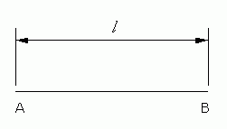
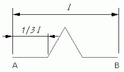
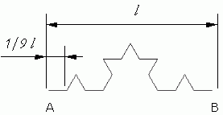
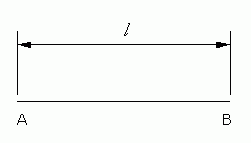
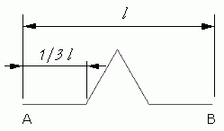
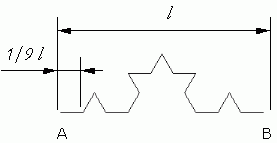
 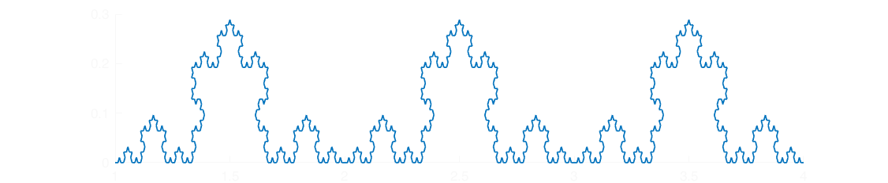
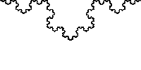
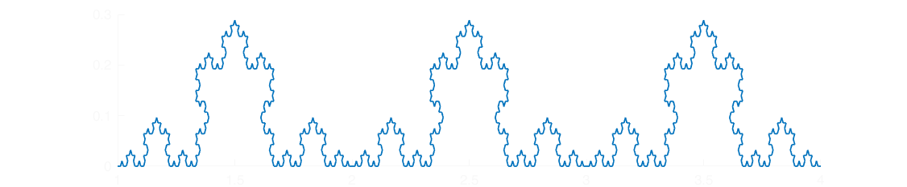
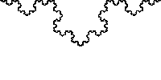
{kind=link}
{kind=link}

 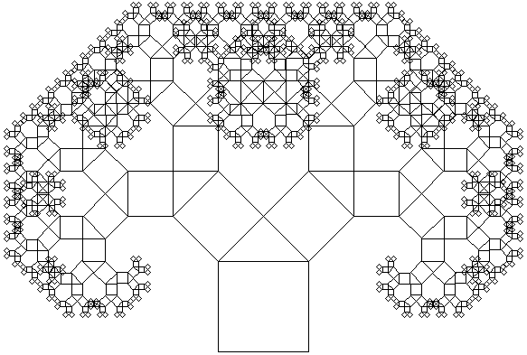
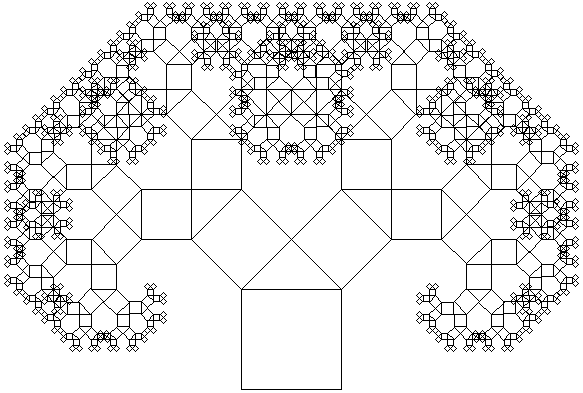

 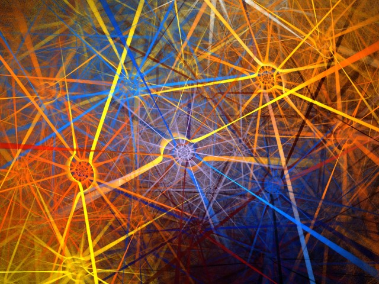
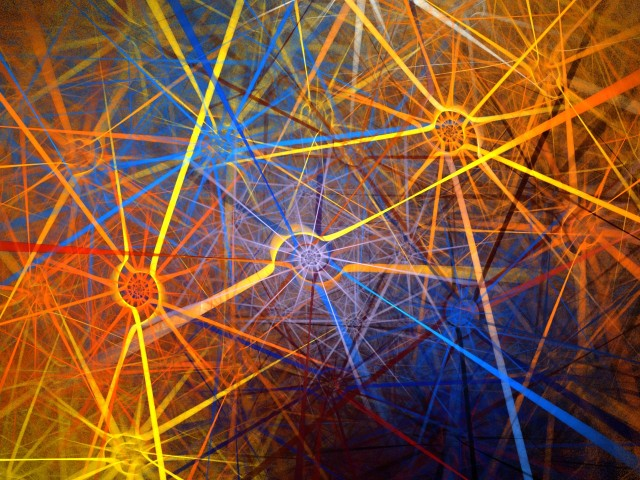
 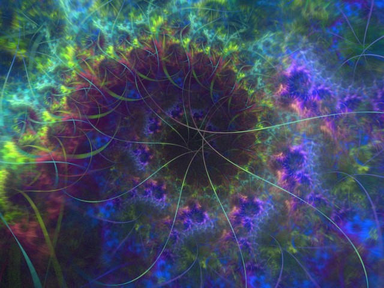
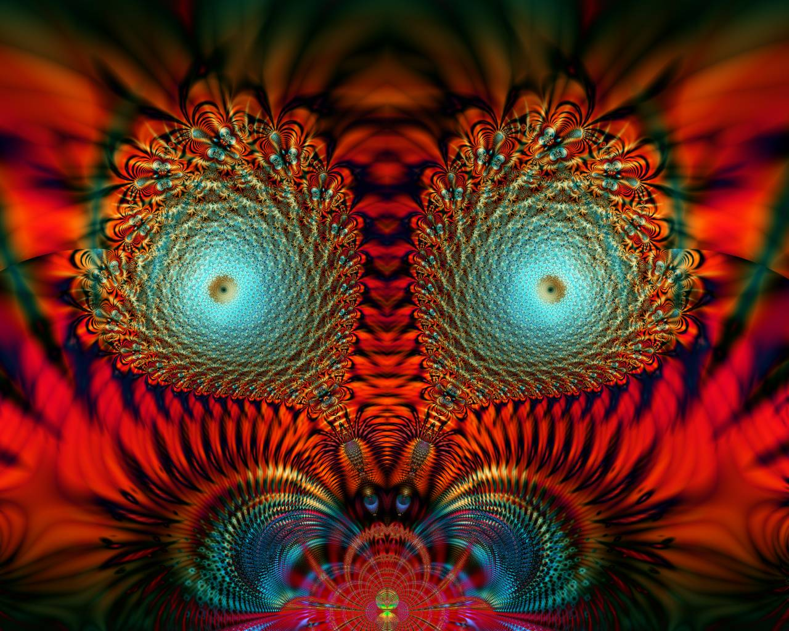
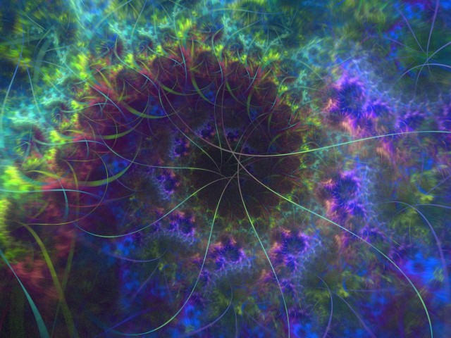
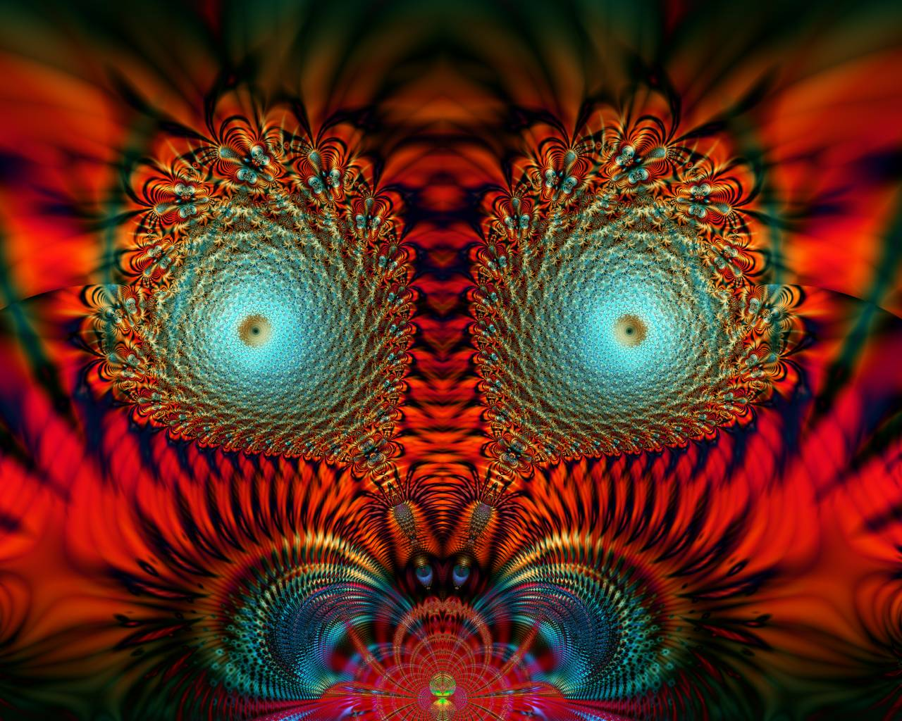
Pozostałe grafiki umieszczone na stronie zostały wykonane przeze mnie.
Użyte programy niekomercyjne i wykorzystane technologie
- 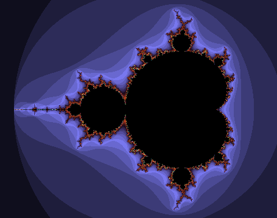XaoS
 Qfractalnow
Qfractalnow Photopea
PhotopeaGoogle Fonts
- <>HTML 5
- # CSS 3
- JSJavaScript